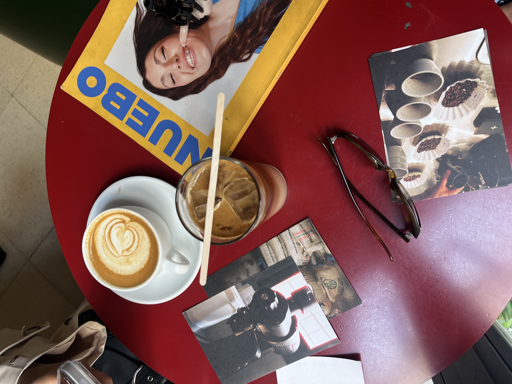

Coffee is one of my favorite drinks, and it has become an important part of my daily lifestyle. Coffee originally comes from Ethiopia, where it was first discovered and cultivated before spreading around the world. For me, the act of making a coffee for myself every morning is ritualistic and provides a slow start to my day. I love to experiment with varieties of beans, syrups, and even methods of brewing coffee. I also really enjoy is visiting cafes. Cafes are great places to journal, study, and spend time with friends. Many cafes also have their own unique aesthetic and vibe, which makes exploring them fun. In this website, I want to share some of my favorite cafes I've been to.

Here's my contact info if you'd like to reach out about cafes!
Email: saanvi.vutukur@gmail.com